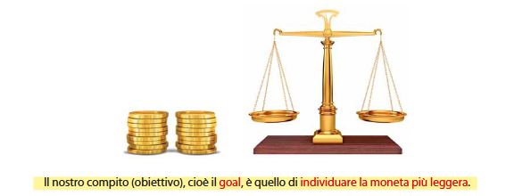

Obiettivo: progettare una strategia che riduca sistematicamente l'insieme dei casi ancora possibili.
Un orafo deve produrre 18 monete d'oro uguali. Diciassette hanno il peso corretto e una è più leggera. Disponiamo soltanto di una bilancia a due piatti, che può indicare:
Come possiamo individuare la moneta falsa in non più di 3 pesate?

Per progettare la soluzione usiamo un albero delle decisioni: ogni nodo rappresenta le monete ancora sospette e ogni ramo rappresenta uno dei tre possibili esiti di una pesata.
Una pesata fornisce tre esiti. Come puoi dividere le 18 monete affinché ogni esito lasci lo stesso numero di sospette?
Idea chiave: a ogni passo suddividiamo i casi possibili in tre gruppi equilibrati e usiamo tutti e tre gli esiti della bilancia.
Sapendo a priori che esiste una sola moneta difettosa e che è più leggera, qual è il numero massimo di monete distinguibili con w pesate?
Ogni pesata ha tre esiti. Un albero di decisione profondo w può quindi avere al massimo 3w foglie, una per ciascun caso distinguibile.
w = 1: fino a 3 monete.w = 2: fino a 9 monete.w = 3: fino a 27 monete.monete_massime(w) = 3^wLe 18 monete rientrano nel limite. La divisione 6 + 6 + 6 permette di applicare la strategia ternaria fin dalla prima pesata.